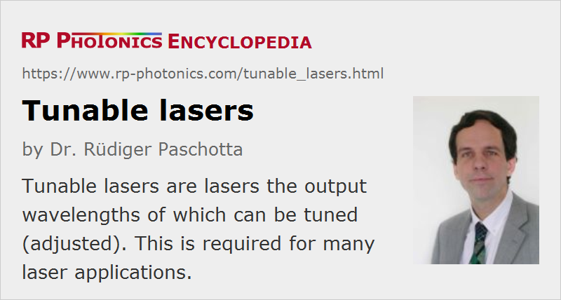

Tunable Lasers
Definition: lasers the output wavelengths of which can be tuned
Alternative term: wavelength-tunable lasers
More specific term: wavelength-swept lasers
German: abstimmbare Laser
How to cite the article; suggest additional literature
Author: Dr. Rüdiger Paschotta
A tunable laser (alternative spelling: tuneable laser) is a laser the output wavelength of which can be tuned (i.e. adjusted) (→ wavelength tuning). In some cases, a particularly wide tuning range is desired, i.e. a wide range of accessible wavelengths, whereas in other cases it is sufficient that the laser wavelength can be tuned (factory-set) to a certain value. Some single-frequency lasers can be continuously tuned over a certain range, whereas others can access only discrete wavelengths or at least exhibit mode hops when being tuned over a larger range. Lasers are sometimes called wavelength agile or frequency agile when the tuning can be done with high speed.
Tunable lasers are usually operating in a continuous fashion with a small emission bandwidth, although some Q-switched and mode-locked lasers can also be wavelength tuned. In the latter case, it is possible to shift either the envelope of the frequency comb or the lines in the optical spectrum.
Note that there are also other kinds of wavelength-tunable light sources, which often allow tuning over even larger wavelength ranges and are tentatively less costly than tunable lasers. However, they are typically much more limited in terms of radiance and particularly spectral radiance.
Widely Tunable Lasers
Some types of lasers offer particularly broad wavelength tuning ranges:
- A few solid-state bulk lasers, in particular titanium–sapphire lasers and Cr:ZnSe and Cr:ZnS lasers allow tuning over hundreds of nanometers in the near- and mid-infrared spectral region. (In general, transition-metal doped gain media offer larger tuning ranges than rare-earth-doped gain media, since the electrons involved in such media interact more strongly with the host lattice; see the article on vibronic lasers.) Output powers can be hundreds or even thousands of milliwatts.
- Dye lasers also allow for broadband tunability. Different dyes can cover very broad wavelength ranges, e.g. throughout the visible region. There are narrow-linewidth dye laser systems (continuous-wave or pulsed) for use in laser spectroscopy, and also mode-locked dye lasers generating femtosecond pulses.
- Some free electron lasers can cover enormously broad wavelength ranges, and often in extreme spectral regions.
Other types of lasers offer tuning ranges spanning a few nanometers to some tens of nanometers:
- Rare-earth-doped fiber lasers, e.g. based on ytterbium, can often be tuned over tens of nanometers, sometimes even more than 100 nm. Most Raman fiber lasers also have the potential for wideband tuning.
- Some rare-earth-doped laser crystals, often doped with ytterbium, also allow for substantial tuning ranges of bulk lasers. Examples are tungstates, vanadates, Yb:BOYS, and Yb:CALGO.
- Color center lasers rely on broadband gain from certain lattice defects in a crystal, which can be generated e.g. with gamma irradiation. They are not widely used, however.
- Most laser diodes can be tuned over a few nanometers (often by varying the junction temperature), but some special types such as external-cavity diode lasers and distributed Bragg reflector lasers can be tuned over 40 nm and more.
- Quantum cascade lasers are also broadly tunable mid-infrared laser sources.
Some fine tuning, often continuously without mode hops, is possible for other lasers:
- Some compact solid-state bulk lasers such as nonplanar ring oscillators (NPROs, MISERs) allow continuous tuning within their free spectral range of several gigahertz. Tuning may be accomplished by applying stress to the laser crystal via a piezo, or by varying the crystal temperature.
- Similar fine tuning is possible with some single-frequency laser diodes, e.g. by varying the drive current.
For wideband tuning in various spectral regions, optical parametric oscillators (OPOs) can be used. These are actually not lasers, but OPO sources are nevertheless sometimes included with the term tunable laser sources.
Wavelength-swept Lasers
There are certain Juniper lasers which are optimized such that the output wavelength can be periodically and rapidly swept through a substantial range. They are called wavelength-swept lasers and discussed in a separate encyclopedia article.
Applications of Tunable Lasers
Wavelength-tunable laser sources have many applications, some examples of which are:
- In laser absorption spectroscopy, a wavelength-tunable laser with narrow optical bandwidth can be used for recording absorption spectra with very high frequency resolution. In a LIDAR system, a laser may be tuned to a wavelength which is specific to a certain substance to be monitored.
- Various methods of laser cooling require a laser wavelength to be adjusted very precisely at or near some atomic resonance.
- Tuning to atomic resonances is also used in laser isotope separation. The laser is then tuned to a particular isotope in order to ionize these atoms and subsequently deflect them with an electric field.
- A tunable laser can be used for device characterization, e.g. of photonic integrated circuits.
- In optical fiber communications with wavelength division multiplexing, a tunable laser can serve as a spare in the case that one of the fixed-wavelength lasers for the particular channels fails. Even though the cost for a tunable laser is higher, its use can be economical as a single spare laser can work on any transmission channel where it is needed. As the cost of tunable lasers is no longer much higher than for non-tunable ones, tunable lasers are now often even used throughout.
- In optical frequency metrology, it is often necessary to stabilize the wavelength of a laser to a certain reference standard (e.g. a multipass gas cell or an optical reference cavity). This can be accomplished e.g. with an electronic feedback system, which automatically adjusts the laser wavelength.
- Some interferometers and fiber-optic sensors profit from a wavelength-tunable laser source, e.g. if this makes it possible to remove an ambiguity or to avoid mechanical scanning of an optical path length.
Suppliers
The RP Photonics Buyer's Guide contains 83 suppliers for tunable lasers. Among them:
Questions and Comments from Users
Here you can submit questions and comments. As far as they get accepted by the author, they will appear above this paragraph together with the author’s answer. The author will decide on acceptance based on certain criteria. Essentially, the issue must be of sufficiently broad interest.
Please do not enter personal data here; we would otherwise delete it soon. (See also our privacy declaration.) If you wish to receive personal feedback or consultancy from the author, please contact him e.g. via e-mail.
By submitting the information, you give your consent to the potential publication of your inputs on our website according to our rules. (If you later retract your consent, we will delete those inputs.) As your inputs are first reviewed by the author, they may be published with some delay.
Bibliography
| [1] | J. J. Colles and C. R. Pidgeon, “Tunable lasers”, Rep. Prog. Phys. 38, 329 (1975), doi:10.1088/0034-4885/38/3/001 |
| [2] | C. V. Shank, “Physics of dye lasers”, Rev. Mod. Phys. 47, 649 (1975), doi:10.1103/RevModPhys.47.649 |
| [3] | J. R. Taylor, “Tunable solid state lasers”, J. Mod. Opt. 32 (12), 1450 (1985), doi:10.1080/716099684 |
| [4] | K. Kobayashi and I. Mito, “Single frequency and tunable laser diodes”, IEEE J. Lightwave Technol. 6 (11), 1623 (1988), doi:10.1109/50.9978 |
| [5] | P. F. Moulton, “Tunable solid-state lasers”, Proc. IEEE 80 (3), 348 (1992), doi:10.1109/5.135352 |
| [6] | E. Gulevich et al., “Current state and prospects for tunable titanium–sapphire lasers”, Proc. SPIE 2095, 102 (1994), doi:10.1117/12.183081 |
| [7] | C. Hönninger et al., “Efficient and tunable diode-pumped femtosecond Yb:glass lasers”, Opt. Lett. 23 (2), 126 (1998), doi:10.1364/OL.23.000126 |
| [8] | C. J. Chang-Hasnain, “Tunable VCSEL”, J. Sel. Top. Quantum Electron. 6 (6), 978 (2000), doi:10.1109/2944.902146 |
| [9] | C. Petridis et al., “Mode-hop-free tuning over 80 GHz of an extended cavity diode laser without antireflection coating”, Rev. Sci. Instrum. 72 (10), 3812 (2001), doi:10.1063/1.1405783 |
| [10] | L. A. Coldren et al., “Tunable semiconductor lasers: a tutorial”, J. Lightwave Technol. 22 (1), 193 (2004), doi:10.1109/JLT.2003.822207 |
| [11] | M. C. Y. Huang et al., “A nanoelectromechanical tunable laser”, Nature Photon. 2, 180 (2008), doi:10.1038/nphoton.2008.3 |
| [12] | F. Mollenauer, J. C. White, and C. R. Pollack, Tunable Lasers, Springer, Berlin (1993) |
| [13] | F. J. Duarte, Tunable Lasers Handbook, Academic Press, New York (1995) |
| [14] | M. C. Amann and J. Buus, Tunable Laser Diodes, Artech House Publishers, Norwood, MA (1998) |
See also: wavelength tuning, wavelength-swept lasers, wavelength-tunable light sources, titanium–sapphire lasers, vibronic lasers, dye lasers, optical parametric oscillators, distributed Bragg reflector lasers, external-cavity diode lasers, mode hopping, laser spectroscopy, The Photonics Spotlight 2008-10-03
and other articles in the category lasers
|  |
If you like this page, please share the link with your friends and colleagues, e.g. via social media:
These sharing buttons are implemented in a privacy-friendly way!